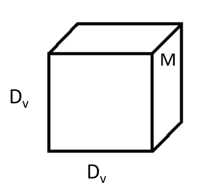
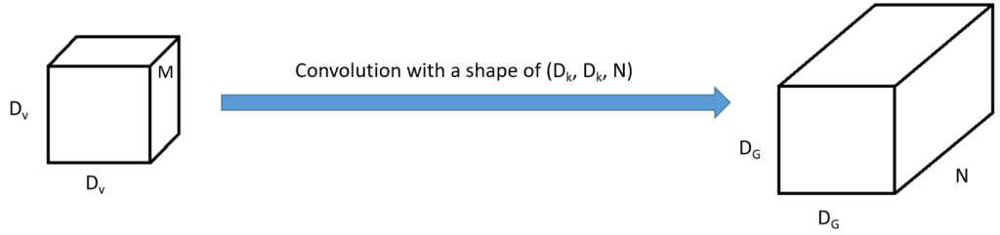
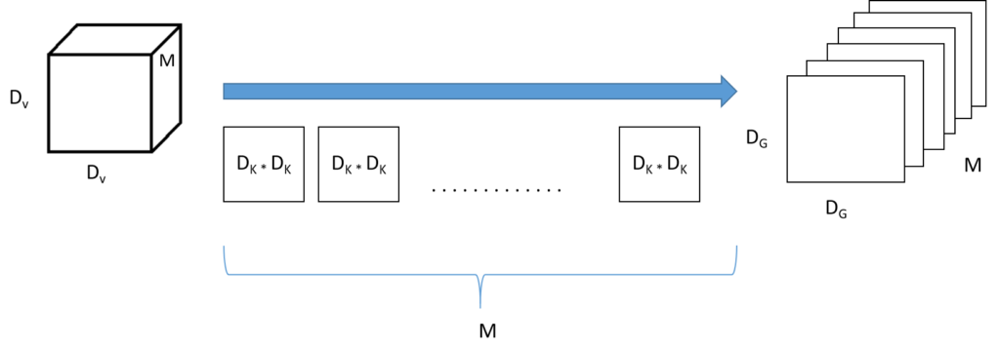
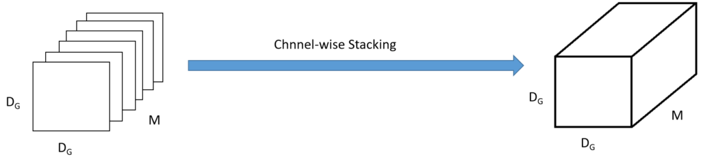
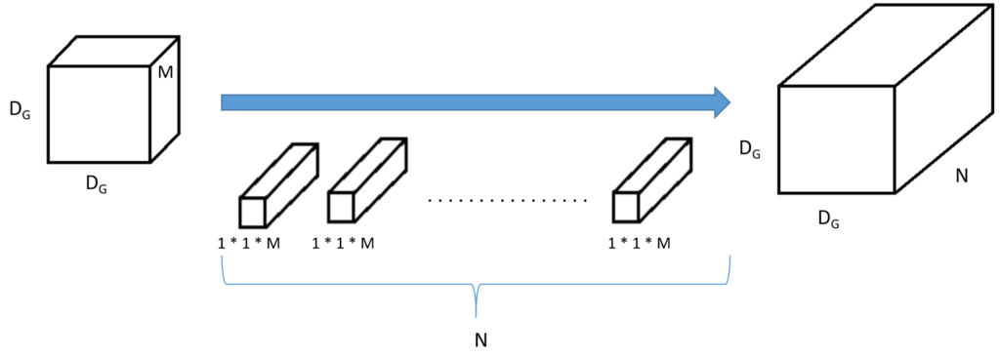
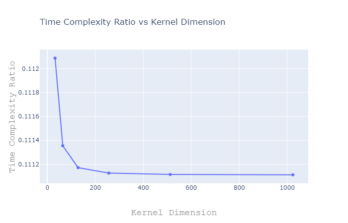

Depthwise Separable Convolutions in Deep Learning
The Convolution operation is a widely used function in Functional Analysis, Image Processing Deep Learning. The convolution operation when applied on two functions f and g, produces a third function expressing how the shape of one is modified by the other. While it is immensely popular, especially in the domain of Deep Learning, the vanilla convolution operation is quite expensive computationally. Modern Neural Network architectures such as Xception and MobileNet use a special type of Convolution called Depthwise Separable Convolution to speed up training and inference, especially on Mobile and Embedded Devices.
The Vanilla Convolution Operation
The convolution function can be mathematically defined as the following:
\[(f \circledast g)(t) = \int_{- \infty}^{\infty} f(\tau) g(t - \tau) d\tau\]
For all non-negative values of t (i.e, for all values of t such that t ∈ [0, ∞) ), we could truncate the limits of integration resulting in,
\[(f \circledast g)(t) = \int_{0}^{t} f(\tau) g(t - \tau) d\tau\]
It can also be defined as the overlap of two functions f and g as one slides over the other, performing a sum of products.

Computational Complexity of Convolution
In order to decide the computational complexity of the convolutional operation, we would count the number of multiplication operations for a convolution. This is because the Binary Addition of two numbers may be performed in a single clock cycle using two registers with the inputs latched and a bunch of combinatorial logic gates. Binary multiplication, however, requires successive shift and addition operations which must be performed as many times as there are bits in the multiplier and is thus a more expensive operation.
Let us consider an input volume of the dimension (\[D_{V}\], \[D_{V}\], N) where \[D_{V}\] is the height and width of the volume and \[N\] is the number of channels. In the case of a standard RGB image \[N = 3\] and for a gray-scale image \[N = 1\].

Let us convolve V with a tensor of shape (\[D_{V}\], \[D_{V}\], N) or N tensors with the shape (\[D_{k}\], \[D_{k}\]) which results in a volume \[G\] of shape (\[D_{G}\], \[D_{G}\], N).

Let us count the number of multiplication operations for this operation.
Number of multiplication operations for a single stride across a single channel = \[D_{k} * D_{k}\].
For M channels in the initial volume, the number of multiplication operations = \[(D_{k})^{2} * M\].
Sliding the kernel over a volume of (\[D_{V}\], \[D_{V}\], M), we get a tensor of shape (\[D_{G}\], \[D_{G}\], N). Hence the total number of multiplication operations for a single channel of the convolution kernel = \[(D_{G})^{2} * (D_{k})^{2} * M\].
Since there are N channels in the convolutional kernel, this operation is repeated N times. Hence, the total number of multiplication operations for the above convolution operation = \[N * (D_{G})^{2} * (D_{k})^{2} * M\].
Now, let us see how using an alternate form of the vanilla convolution operation, we can reduce time complexity.
Depthwise Separable Convolution
In the vanilla convolution operation all, the kernel is applied to all the channels of the input volume. However, Depthwise Separable Convolutions breaks down the whole operation into 2 steps:
- Depthwise Convolution or the Filtering Stage
- Pointwise Convolution or the Combination Stage
Depthwise Convolutions
Let us consider the same input volume (\[D_{V}\], \[D_{V}\], M) convolving with M (\[D_{K}\], \[D_{K}\]) kernels. A single convolution with a single kernel gives a volume of (\[D_{G}\], \[D_{G}\], 1). Repeating this N times, we get N such tensors and stacking them up channel-wise, we get a single tensor of shape (\[D_{G}\], \[D_{G}\], M).

Now, the number of multiplication operations for a single kernel convolving over a single input channel = \[D_{K} * D_{K}\]. When the convolution is applied over an entire input volume

Let us now find the computational complexity for Depthwise Convolution.
The number of multiplication operations for the convolution of a single (\[D_{K}\], \[D_{K}\]) kernel over a single stride over the input volume = \[(D_{K})^{2}\].
Since the output shape is (\[D_{G}\], \[D_{G}\]), the number of multiplication operations for convolving over a single channel of the input image = \[(D_{G})^{2} * (D_{K})^{2}\].
Since there are \[M\] number of kernels for convolving with \[M\] number of channels, the number of multiplication operations for Depthwise Convolution operation = \[M * (D_{G})^{2} * (D_{K})^{2}\].
Pointwise Convolution
For Pointwise Convolution, we convolve the (\[D_{G}\], \[D_{G}\], M) volume with \[N\] kernels of (1, 1, \[M\]) producing the desired output of shape (\[D_{V}\], \[D_{V}\], N).

We will now find the computational complexity of the Pointwise Convolution operation.
For convolving a single kernel over a single stride of the input image, the number of multiplication operations = \[1 * 1 * M\] = \[M\].
For convolving a single kernel over a single channel of the input tensor producing a shape of (\[D_{G}\], \[D_{G}\]), the number of multiplication operations = \[M * (D_{G})^{2}\].
For convolving \[N\] number of kernels over the whole of input tensor, the number of multiplication operations = \[N * M * (D_{G})^{2}\].
Comparing Vanilla Convolution with Depthwise Separable Convolution
Let us take the ratios between the Complexity of the Vanilla Convolution () operation and that of the Depthwise Separable Convolution operation.
\[\frac{conv_{vanilla}}{conv_{dsc}} = \frac{N * (D_{G})^{2} * (D_{K})^{2} * M}{M * (D_{G})^{2} * [(D_{K})^{2} + N]}\]
or,
\[\frac{conv_{vanilla}}{conv_{dsc}} = \frac{(D_{K})^{2} * M}{(D_{K})^{2} + N}\]
or,
\[\frac{conv_{vanilla}}{conv_{dsc}} = \frac{1}{(D_{K})^{2}} + \frac{1}{N}\]
Now, let us consider \[N = 3\] and DK = [2 ** i for i in range(5, 11)] and visualize how the ratio varies.

Note that the ratio of Time Complexity of Vanilla Convolution to that of Depthwise Separable Convolution is always much less than 1 and it decreases with increasing Kernel Dimension, making it much faster compared to Vanilla Convolution.
Depthwise Separable Convolutions are widely used in building fast CNN architectures such as Xception, Mobilenet and Multi-modal Neural Networks. In the upcoming articles, we would discuss these two articles in detail.